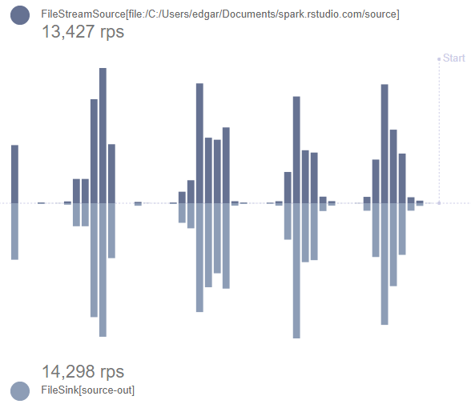
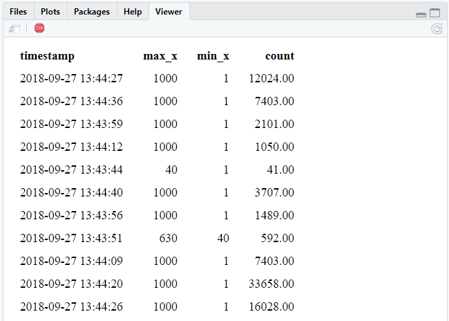

library(future)
library(sparklyr)
sc <- spark_connect(master = "local", spark_version = "2.3.0")
if(file.exists("source")) unlink("source", TRUE)
if(file.exists("source-out")) unlink("source-out", TRUE)
stream_generate_test(iterations = 1)
read_folder <- stream_read_csv(sc, "source")
write_output <- stream_write_csv(read_folder, "source-out")
invisible(future(stream_generate_test(interval = 0.5)))
stream_view(write_output)Intro to Spark Streaming with sparklyr
The sparklyr interface
As stated in the Spark’s official site, Spark Streaming makes it easy to build scalable fault-tolerant streaming applications. Because is part of the Spark API, it is possible to re-use query code that queries the current state of the stream, as well as joining the streaming data with historical data. Please see Spark’s official documentation for a deeper look into Spark Streaming.
The sparklyr interface provides the following:
- Ability to run dplyr, SQL, spark_apply(), and PipelineModels against a stream
- Read in multiple formats: CSV, text, JSON, parquet, Kafka, JDBC, and orc
- Write stream results to Spark memory and the following file formats: CSV, text, JSON, parquet, Kafka, JDBC, and orc
- An out-of-the box graph visualization to monitor the stream
- A new reactiveSpark() function, that allows Shiny apps to poll the contents of the stream create Shiny apps that are able to read the contents of the stream
Interacting with a stream
A good way of looking at the way how Spark streams update is as a three stage operation:
- Input - Spark reads the data inside a given folder. The folder is expected to contain multiple data files, with new files being created containing the most current stream data.
-
Processing - Spark applies the desired operations on top of the data. These operations could be data manipulations (
dplyr, SQL), data transformations (sdfoperations, PipelineModel predictions), or native R manipulations (spark_apply()). - Output - The results of processing the input files are saved in a different folder.
In the same way all of the read and write operations in sparklyr for Spark Standalone, or in sparklyr’s local mode, the input and output folders are actual OS file system folders. For Hadoop clusters, these will be folder locations inside the HDFS.
Example 1 - Input/Output
The first intro example is a small script that can be used with a local master. The result should be to see the stream_view() app showing live the number of records processed for each iteration of test data being sent to the stream.

stream_stop(write_output)
spark_disconnect(sc)Code breakdown
-
Open the Spark connection ::: {.cell}
library(sparklyr) sc <- spark_connect(master = "local", spark_version = "2.3.0"):::
-
Optional step. This resets the input and output folders. It makes it easier to run the code multiple times in a clean manner. ::: {.cell}
if(file.exists("source")) unlink("source", TRUE) if(file.exists("source-out")) unlink("source-out", TRUE):::
-
Produces a single test file inside the “source” folder. This allows the “read” function to infer CSV file definition. ::: {.cell}
stream_generate_test(iterations = 1) list.files("source"):::
[1] "stream_1.csv" -
Points the stream reader to the folder where the streaming files will be placed. Since it is primed with a single CSV file, it will use as the expected layout of subsequent files. By default,
stream_read_csv()creates a single integer variable data frame. ::: {.cell}read_folder <- stream_read_csv(sc, "source"):::
-
The output writer is what starts the streaming job. It will start monitoring the input folder, and then write the new results in the “source-out” folder. So as new records stream in, new files will be created in the “source-out” folder. Since there are no operations on the incoming data at this time, the output files will have the same exact raw data as the input files. The only difference is that the files and sub folders within “source-out” will be structured how Spark structures data folders. ::: {.cell}
write_output <- stream_write_csv(read_folder, "source-out") list.files("source-out"):::
[1] "_spark_metadata" "checkpoint" [3] "part-00000-1f29719a-2314-40e1-b93d-a647a3d57154-c000.csv" -
The test generation function will run 100 files every 0.2 seconds. To run the tests “out-of-sync” with the current R session, the
futurepackage is used. ::: {.cell}library(future) invisible(future(stream_generate_test(interval = 0.2, iterations = 100))):::
-
The
stream_view()function can be used before the 50 tests are complete because of the use of thefuturepackage. It will monitor the status of the job thatwrite_outputis pointing to and provide information on the amount of data coming into the “source” folder and going out into the “source-out” folder. ::: {.cell}stream_view(write_output):::
-
The monitor will continue to run even after the tests are complete. To end the experiment, stop the Shiny app and then use the following to stop the stream and close the Spark session. ::: {.cell}
stream_stop(write_output) spark_disconnect(sc):::
Example 2 - Processing
The second example builds on the first. It adds a processing step that manipulates the input data before saving it to the output folder. In this case, a new binary field is added indicating if the value from x is over 400 or not. This time, while run the second code chunk in this example a few times during the stream tests to see the aggregated values change.
library(future)
library(sparklyr)
library(dplyr, warn.conflicts = FALSE)
sc <- spark_connect(master = "local", spark_version = "2.3.0")
if(file.exists("source")) unlink("source", TRUE)
if(file.exists("source-out")) unlink("source-out", TRUE)
stream_generate_test(iterations = 1)
read_folder <- stream_read_csv(sc, "source")
process_stream <- read_folder %>%
mutate(x = as.double(x)) %>%
ft_binarizer(
input_col = "x",
output_col = "over",
threshold = 400
)
write_output <- stream_write_csv(process_stream, "source-out")
invisible(future(stream_generate_test(interval = 0.2, iterations = 100)))Run this code a few times during the experiment: ::: {.cell}
spark_read_csv(sc, "stream", "source-out", memory = FALSE) %>%
group_by(over) %>%
tally():::
The results would look similar to this. The n totals will increase as the experiment progresses.
# Source: lazy query [?? x 2]
# Database: spark_connection
over n
<dbl> <dbl>
1 0 40215
2 1 60006Clean up after the experiment ::: {.cell}
stream_stop(write_output)
spark_disconnect(sc):::
Code breakdown
-
The processing starts with the
read_foldervariable that contains the input stream. It coerces the integer fieldx, into a type double. This is because the next function,ft_binarizer()does not accept integers. The binarizer determines ifxis over 400 or not. This is a good illustration of howdplyrcan help simplify the manipulation needed during the processing stage. ::: {.cell}process_stream <- read_folder %>% mutate(x = as.double(x)) %>% ft_binarizer( input_col = "x", output_col = "over", threshold = 400 ):::
-
The output now needs to write-out the processed data instead of the raw input data. Swap
read_folderwithprocess_stream. ::: {.cell}write_output <- stream_write_csv(process_stream, "source-out"):::
-
The “source-out” folder can be treated as a if it was a single table within Spark. Using
spark_read_csv(), the data can be mapped, but not brought into memory (memory = FALSE). This allows the current results to be further analyzed using regulardplyrcommands. ::: {.cell}spark_read_csv(sc, "stream", "source-out", memory = FALSE) %>% group_by(over) %>% tally():::
Example 3 - Aggregate in process and output to memory
Another option is to save the results of the processing into a in-memory Spark table. Unless intentionally saving it to disk, the table and its data will only exist while the Spark session is active.
The biggest advantage of using Spark memory as the target, is that it will allow for aggregation to happen during processing. This is an advantage because aggregation is not allowed for any file output, expect Kafka, on the input/process stage.
Using example 2 as the base, this example code will perform some aggregations to the current stream input and save only those summarized results into Spark memory:
library(future)
library(sparklyr)
library(dplyr, warn.conflicts = FALSE)
sc <- spark_connect(master = "local", spark_version = "2.3.0")
if(file.exists("source")) unlink("source", TRUE)
stream_generate_test(iterations = 1)
read_folder <- stream_read_csv(sc, "source")
process_stream <- read_folder %>%
stream_watermark() %>%
group_by(timestamp) %>%
summarise(
max_x = max(x, na.rm = TRUE),
min_x = min(x, na.rm = TRUE),
count = n()
)
write_output <- stream_write_memory(process_stream, name = "stream")
invisible(future(stream_generate_test()))Run this command a different times while the experiment is running: ::: {.cell}
tbl(sc, "stream") :::
Clean up after the experiment ::: {.cell}
stream_stop(write_output)
spark_disconnect(sc):::
Code breakdown
-
The
stream_watermark()functions add a newtimestampvariable that is then used in thegroup_by()command. This is required by Spark Stream to accept summarized results as output of the stream. The second step is to simply decide what kinds of aggregations we need to perform. In this case, a simply max, min and count are performed.
::: {.cell}process_stream <- read_folder %>% stream_watermark() %>% group_by(timestamp) %>% summarise( max_x = max(x, na.rm = TRUE), min_x = min(x, na.rm = TRUE), count = n() ):::
-
The
spark_write_memory()function is used to write the output to Spark memory. The results will appear as a table of the Spark session with the name assigned in thenameargument, in this case the name selected is: “stream”.
::: {.cell}write_output <- stream_write_memory(process_stream, name = "stream"):::
-
To query the current data in the “stream” table can be queried by using the
dplyrtbl()command. ::: {.cell}tbl(sc, "stream"):::
Example 4 - Shiny integration
sparklyr provides a new Shiny function called reactiveSpark(). It can take a Spark data frame, in this case the one created as a result of the stream processing, and then creates a Spark memory stream table, the same way a table is created in example 3.
library(future)
library(sparklyr)
library(dplyr, warn.conflicts = FALSE)
library(ggplot2)
sc <- spark_connect(master = "local", spark_version = "2.3.0")
if(file.exists("source")) unlink("source", TRUE)
if(file.exists("source-out")) unlink("source-out", TRUE)
stream_generate_test(iterations = 1)
read_folder <- stream_read_csv(sc, "source")
process_stream <- read_folder %>%
stream_watermark() %>%
group_by(timestamp) %>%
summarise(
max_x = max(x, na.rm = TRUE),
min_x = min(x, na.rm = TRUE),
count = n()
)
invisible(future(stream_generate_test(interval = 0.2, iterations = 100)))
library(shiny)
ui <- function(){
tableOutput("table")
}
server <- function(input, output, session){
ps <- reactiveSpark(process_stream)
output$table <- renderTable({
ps() %>%
mutate(timestamp = as.character(timestamp))
})
}
runGadget(ui, server)
Code breakdown
Notice that there is no
stream_write_...command. The reason is thatreactiveSpark()function contains thestream_write_memory()function.-
This very basic Shiny app simply displays the output of a table in the
uisection ::: {.cell}library(shiny) ui <- function(){ tableOutput("table") }:::
-
In the
serversection, thereactiveSpark()function will update every time there’s a change to the stream and return a data frame. The results are saved to a variable calledps()in this script. Treat theps()variable as a regular table that can be piped from, as shown in the example. In this case, thetimestampvariable is converted to string for to make it easier to read. ::: {.cell}server <- function(input, output, session){ ps <- reactiveSpark(process_stream) output$table <- renderTable({ ps() %>% mutate(timestamp = as.character(timestamp)) }) }:::
-
Use
runGadget()to display the Shiny app in the Viewer pane. This is optional, the app can be run using normal Shiny run functions.::: {.cell}
runGadget(ui, server):::
Example 5 - ML Pipeline Model
This example uses a fitted Pipeline Model to process the input, and saves the predictions to the output. This approach would be used to apply Machine Learning on top of streaming data.
library(sparklyr)
library(dplyr, warn.conflicts = FALSE)
sc <- spark_connect(master = "local", spark_version = "2.3.0")
if(file.exists("source")) unlink("source", TRUE)
if(file.exists("source-out")) unlink("source-out", TRUE)
df <- data.frame(x = rep(1:1000), y = rep(2:1001))
stream_generate_test(df = df, iteration = 1)
model_sample <- spark_read_csv(sc, "sample", "source")
pipeline <- sc %>%
ml_pipeline() %>%
ft_r_formula(x ~ y) %>%
ml_linear_regression()
fitted_pipeline <- ml_fit(pipeline, model_sample)
ml_stream <- stream_read_csv(
sc = sc,
path = "source",
columns = c(x = "integer", y = "integer")
) %>%
ml_transform(fitted_pipeline, .) %>%
select(- features) %>%
stream_write_csv("source-out")
stream_generate_test(df = df, interval = 0.5)
spark_read_csv(sc, "stream", "source-out", memory = FALSE) ### Source: spark<stream> [?? x 4]
## x y label prediction
## * <int> <int> <dbl> <dbl>
## 1 276 277 276 276.
## 2 277 278 277 277.
## 3 278 279 278 278.
## 4 279 280 279 279.
## 5 280 281 280 280.
## 6 281 282 281 281.
## 7 282 283 282 282.
## 8 283 284 283 283.
## 9 284 285 284 284.
##10 285 286 285 285.
### ... with more rows
stream_stop(ml_stream)
spark_disconnect(sc)Code Breakdown
-
Creates and fits a pipeline ::: {.cell}
df <- data.frame(x = rep(1:1000), y = rep(2:1001)) stream_generate_test(df = df, iteration = 1) model_sample <- spark_read_csv(sc, "sample", "source") pipeline <- sc %>% ml_pipeline() %>% ft_r_formula(x ~ y) %>% ml_linear_regression() fitted_pipeline <- ml_fit(pipeline, model_sample):::
-
This example pipelines the input, process and output in a single code segment. The
ml_transform()function is used to create the predictions. Because the CSV format does not support list type fields, thefeaturescolumn is removed before the results are sent to the output. ::: {.cell}ml_stream <- stream_read_csv( sc = sc, path = "source", columns = c(x = "integer", y = "integer") ) %>% ml_transform(fitted_pipeline, .) %>% select(- features) %>% stream_write_csv("source-out"):::